Machine
Unlearning
Making a trained model forget one person's data
Albert No · Yonsei University
Trustworthy AI · 2026
Contents
The Right to Be Forgotten
Why a deletion request is hard
A User Changes Their Mind
Alice shared her data. Now she wants out.
- "Delete my account and my data."
- Easy for a database: drop the row
- But her data already trained a model
Deleting the row does not touch the weights.
The Law Says Delete
GDPR (the EU's General Data Protection Regulation) grants a right to erasure.
- Article 17: the "right to be forgotten"
- On request, a controller must delete personal data
- California's CCPA grants a similar right
A legal duty, not a feature request.
Delete for Three Reasons
Privacy law is only one source of deletion demands.
Privacy
GDPR / CCPA erasure of personal data.
Copyright
Rights holders want their books out.
Safety
Remove hazardous "how-to" knowledge.
Same demand each time: get it out of the weights.
Data Lives in the Weights
Training presses each record into the parameters.
Delete the row, and the trace in the weights remains.
Why Not Just Ignore It
A model that still remembers Alice keeps her at risk.
- Membership inference can confirm she was in
- Extraction can recite her record
- The deletion was never real
Compliance means the model forgets, not just the database.
Retraining Is Expensive
The obvious fix: train again without Alice.
- One large model can cost millions to train
- Deletion requests arrive every day
- Retraining per request is hopeless
We need to forget without starting over.
Enter Machine Unlearning
The goal
Given a trained model, efficiently produce a new model as if a chosen data point had never been used.
A first formal proposal appeared in 2015.
A Decade of Work
From a niche idea to a regulatory necessity.
- 2015: the term "machine unlearning" coined
- 2019–21: formal definitions and SISA
- 2023–26: unlearning for large models
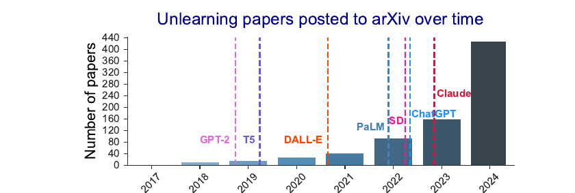
Paper counts took off with the LLM wave.
What Unlearning Means
Exact, approximate, and the gold standard
The Gold Standard
The ideal answer is simple to state.
Retrain from scratch
The model you would have gotten if the point had never been in the data.
Every method is judged against this target.
Two Models, Compared
Unlearning aims to match the retrained model, much cheaper.
Exact Unlearning
The unlearned model is identical in distribution to retraining.
- A provable guarantee, not a hope
- Often needs special training structure
- Strong, but can be costly to set up
Same output distribution as if the point never existed.
Approximate Unlearning
Settle for close enough, much faster.
- Nudge the weights to undo one point
- Accept a small, bounded difference
- Trade exactness for speed
The practical regime for large models.
Borrowing the DP Yardstick
Define "close" the way DP (Differential Privacy) defines indistinguishable.
- The unlearned model should look like the retrained one
- Bound the gap between the two output distributions
- Small gap ⇒ looks retrained
Same $(\varepsilon, \delta)$ shape as differential privacy.
Forget Set and Retain Set
The data splits into two parts.
Forget set
The records to erase from the model.
Retain set
Everything we keep and still want to predict well.
Goal: forget one side, preserve the other.
Two Things to Get Right
A good unlearning method balances both.
- Forgetting: the point's influence is gone
- Utility: accuracy on the retain set survives
Forgetting everything is easy. Forgetting only the target is hard.
How to Unlearn
Retrain, shard, and approximate
The Retraining Baseline
Drop the point, train again on the rest.
- Exact by construction
- The yardstick every method copies
- Too slow to run per request
Correct and useless: the baseline to beat on cost.
Idea: Train in Pieces
If a point touched only part of the model, retrain only that part.
- Split the data into shards
- Train one sub-model per shard
- Deletion only redoes one shard
This is the core trick behind SISA.
SISA
SISA = Sharded, Isolated, Sliced, Aggregated training.
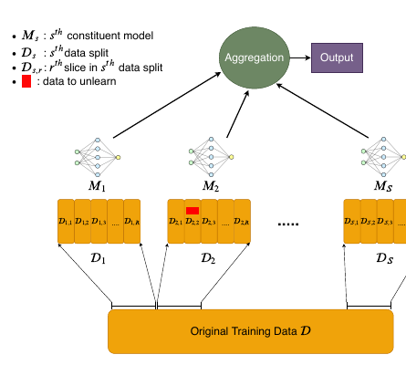
- Sharded: data cut into S disjoint shards
- Isolated: one model per shard, no data shared
- Sliced: each shard trained slice by slice
- Aggregated: votes combined at inference
Deleting in SISA
A delete request hits one shard only.
- Find the shard holding the point.
- Retrain just that sub-model.
- Re-aggregate; the rest is untouched.
Exact unlearning at a fraction of the retraining cost.
Slices Make It Cheaper
Inside a shard, train in incremental slices.
- Save a checkpoint after each slice
- On delete, roll back to before the point
- Replay only the later slices
Less to redo than retraining the whole shard.
The SISA Tradeoff
Sharding is not free.
Wins
- Cheap, exact deletion
- Predictable cost per request
Costs
- Each sub-model sees less data
- Aggregate accuracy can drop
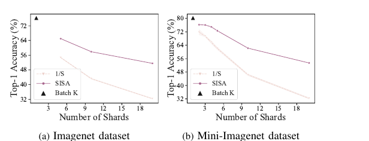
Can We Edit the Weights?
SISA changes training. What about a model already trained?
- No shards, no checkpoints saved
- Want to nudge weights to undo one point
- This is approximate unlearning
Estimate the point's influence, then subtract it.
Influence Functions
Estimate one example's pull on the weights, then subtract that pull.
- Read off the point's gradient at the trained weights
- Reshape it by the loss-surface curvature
- Step the weights the other way to undo the fit
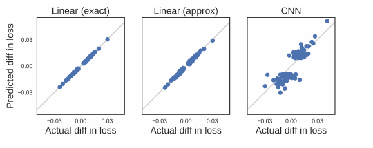
One weight edit, no retraining: the estimate tracks true leave-one-out retraining.
The Catch: Curvature
Reshaping by curvature needs the inverse Hessian.
- It holds one entry per pair of parameters
- A billion parameters means far too many entries to store
- Only rough approximations are feasible
Exact influence is out of reach at scale.
Gradient Ascent
Training descends the loss. To forget, ascend it on the target.
- Take a normal training step, but flip its sign
- This pushes the forget point's loss up
- The fit on that point unwinds
Descent learns; ascent undoes.
Ascent Can Wreck the Model
Raising the loss has no built-in brake.
- Overshoot, and accuracy collapses
- It can damage the retain set too
- Needs a retain-set anchor to stay useful
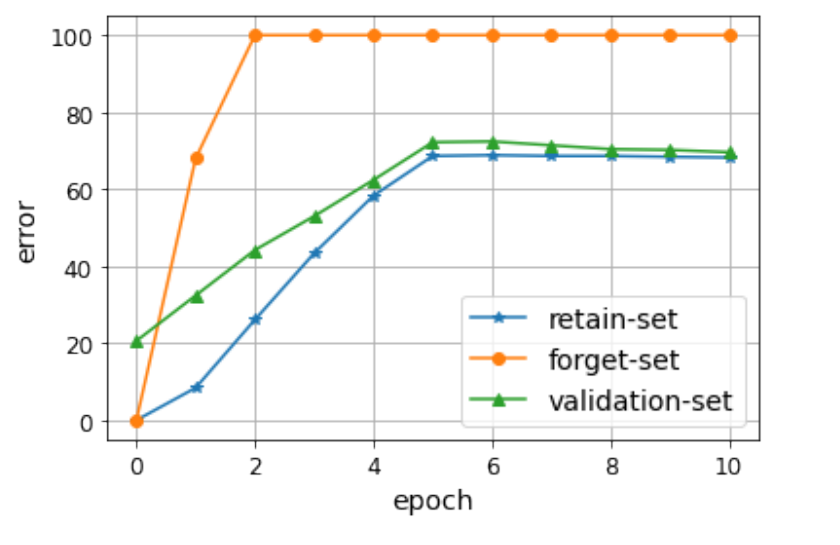
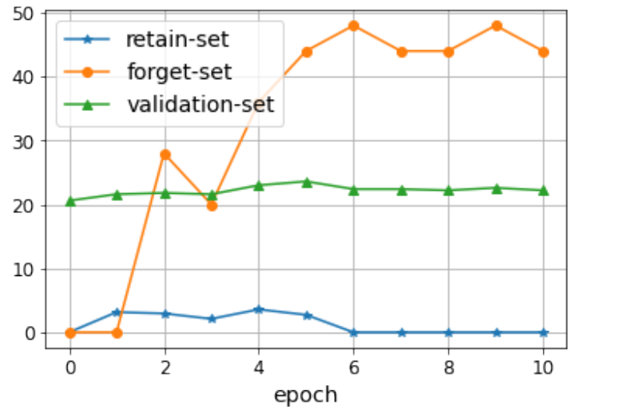
A Gentler Push: NPO
NPO (Negative Preference Optimization) adds a brake: steps shrink as forgetting succeeds.
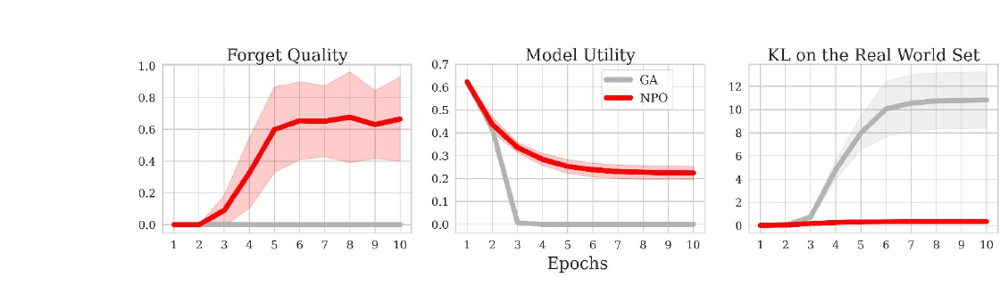
Ascent collapses the model; NPO forgets while utility survives far longer.
The Method Landscape
Retrain
Exact, slow, the baseline.
SISA
Exact, shard-local, restructures training.
Approximate
Fast weight edits, no exact guarantee.
More speed usually means a weaker guarantee.
Try It Yourself
Colab
- Train a small classifier on two classes
- Unlearn one class by gradient ascent
- Watch forget accuracy and retain accuracy
See how easily ascent overshoots and breaks utility.
Unlearning in Language Models
Forget a fact, a book, a hazard
What Do We Forget?
In an LLM, the target is rarely one row.
- A specific person's private facts
- A copyrighted book's contents
- Hazardous "how-to" knowledge
Knowledge is spread across the whole network.
No Single Row to Drop
A fact appears in many places, in many forms.
- Paraphrased across thousands of documents
- Entangled with facts we want to keep
- No clean "forget set" of rows
This makes LLM unlearning much harder than dropping data.
Who's Harry Potter?
A 2023 demo: make a model forget the books.
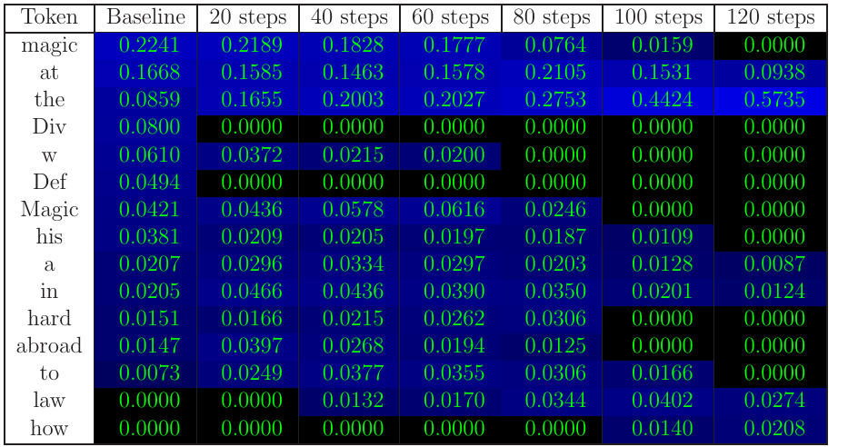
- Find tokens tied to the Harry Potter world.
- Replace them with generic alternatives.
- Fine-tune the model toward the generic text.
About one GPU hour on Llama-2-7b, no retraining. "Harry Potter studies ... magic" fades step by step.
The Result
Prompted about Harry Potter, the model draws a blank.
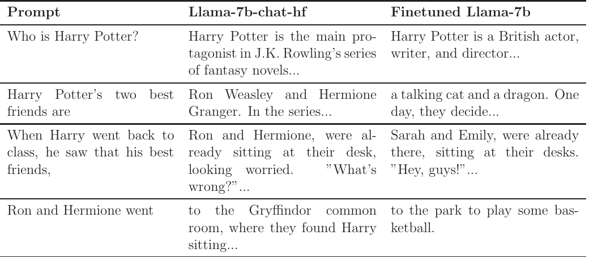
The famous scenes are gone, general language stays: cheap and targeted, but not provably exact.
Measuring Forgetting: TOFU
TOFU (Task of Fictitious Unlearning) gives a clean test.
- 200 fictitious authors, 20 Q&A pairs each
- Fine-tune the model to learn all 4,000
- Then ask it to forget a chosen set of authors
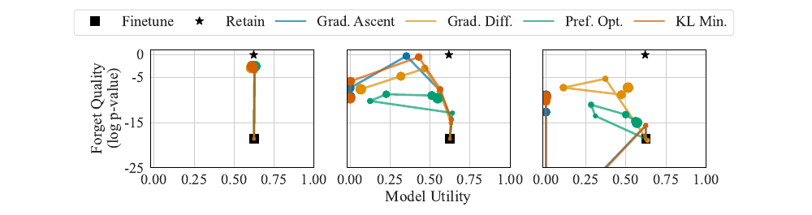
TOFU in One Picture

Pretrain, fine-tune on fiction, unlearn a split: every stage under the evaluator's control.
Why Fictitious?
Fake facts make forgetting checkable.
- The model only knows them from fine-tuning
- No leakage from the rest of the web
- If it still answers, it did not forget
A controlled lab for a messy problem.
Hazardous Knowledge: WMDP
WMDP (Weapons of Mass Destruction Proxy) targets dangerous facts.
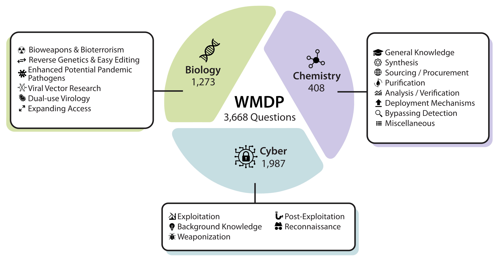
- 3,668 multiple-choice questions
- Bio, cyber, and chemical hazards
- Goal: a model that cannot answer them
RMU
RMU (Representation Misdirection for Unlearning) scrambles the internals.
- On hazardous topics, push activations to noise
- On safe topics, keep activations unchanged
- The model "loses the thread" on hazards
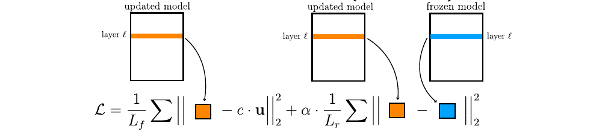
RMU, Measured
Scrambling one layer does the job on the benchmark.
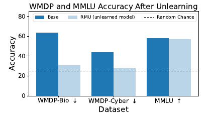
- WMDP-Bio and WMDP-Cyber drop to near random chance
- MMLU general knowledge barely moves
- Forget the hazard, keep the rest
Whether the knowledge is gone or merely hidden is the next section's question.
MUSE: Six Boxes to Tick
MUSE scores unlearning for both sides of the deal.
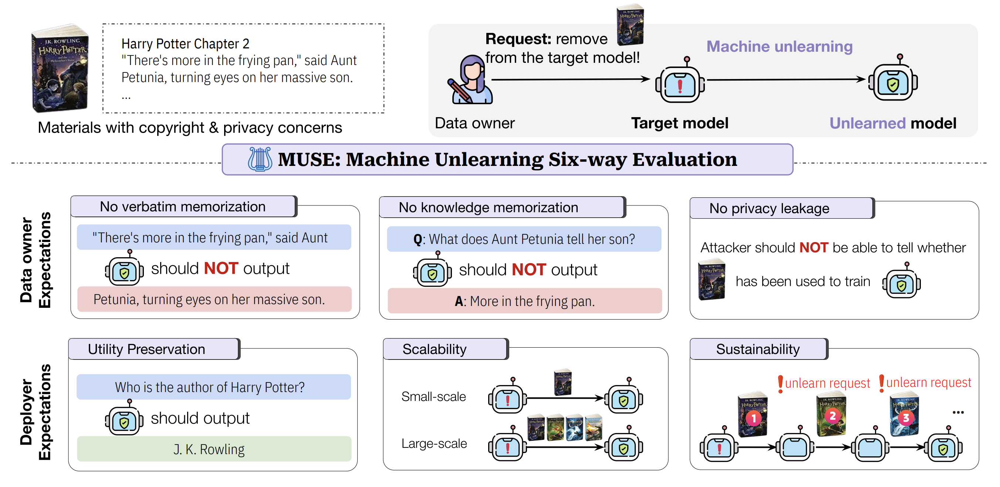
Three checks for the data owner, three for the deployer.
Unlearning vs Filtering
Why edit the model when a filter is easier?
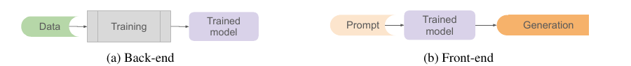
Unlearning: back-end
Aims to remove the knowledge itself.
Output filter: front-end
Blocks bad answers, but the knowledge stays inside.
A filter can be bypassed; removed knowledge cannot leak.
Did It Really Forget?
Auditing and relearning attacks
Verification Is Hard
"It forgot" is a claim that needs proof.
- The weights look different, but is the point gone?
- Approximate methods give no certificate
- We must test the model, not trust it
Absence of an answer is not absence of knowledge.
Audit With Membership Inference
Reuse the attacker as an auditor.
- Run a membership attack on the forgotten point.
- Still flagged as a member ⇒ a trace remains.
- Indistinguishable from never-seen ⇒ success.
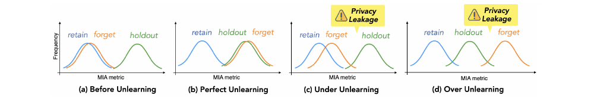
The forget set should land on the holdout curve: too close to retain or too far past it both leak.
The Tell Persists
A forgotten point can still sit in the member bell.
If it lands among members, forgetting failed.
Look Inside: IDI
IDI (Information Difference Index) audits the hidden layers, not the answers.
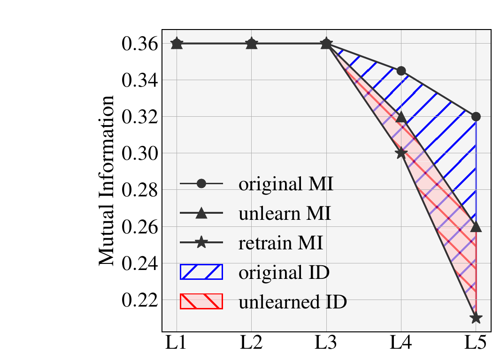
Do the internals still carry forget-set information a retrained model would not?
Relearning Attacks
A sharper test: try to bring the knowledge back.
- Fine-tune briefly on a few related examples
- If it snaps back fast, it was never gone
- A faint trace makes relearning easy

Even unrelated text with the same sentence structure brings the content back.
Relearning, Measured
Unlearn a book, then fine-tune on harmless related text: the memorization returns.

The relearning data never contains the forgotten text itself.
Quantize, and It Comes Back
Even standard compression can undo unlearning.
- Unlearned model at full precision: 21% of the "forgotten" knowledge remains
- Same model after 4-bit quantization: 83% is back
- No attacker, just shipping a smaller model
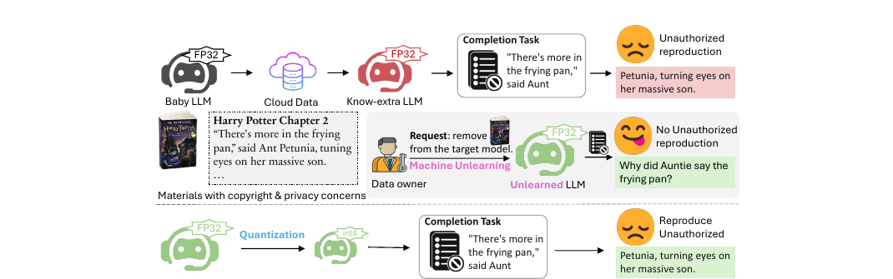
Dormant, Not Deleted
Many methods only suppress knowledge. A small nudge wakes it up.
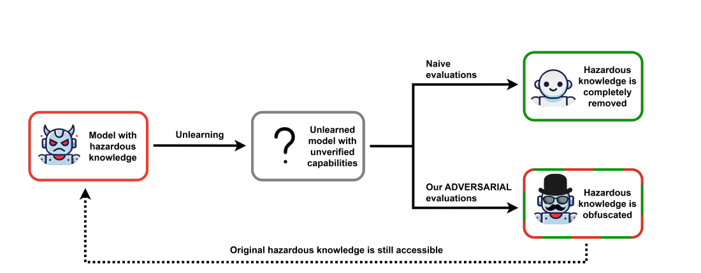
Suppression is reversible; deletion should not be.
Frontier 2025–26
Robust unlearning and open problems
The "Overused" Critique
In LLMs, "unlearning" often just means refusing.
- The model declines to answer the question
- But the knowledge is still in the weights
- Refusal is behavior, not removal
A relearning or jailbreak prompt can recover it. Only the left branch deserves the word.
Does It Do What You Think?
Position papers now question the framing itself.
- Removing the data is not the same as removing its effects
- One word covers many different technical targets
- Policy needs the precise claim, not the slogan
What Guarantee Holds?
Be honest about the strength of each claim.
Refuses
Won't answer one prompt.
Suppressed
Hard to elicit, still present.
Removed
Provably gone, like retraining.
Most LLM methods reach "suppressed", not "removed".
Robust Unlearning
The goal: forgetting that survives an attacker.
- Resist relearning and jailbreak prompts
- Hold up under adversarial fine-tuning
- Not just lower accuracy on one test
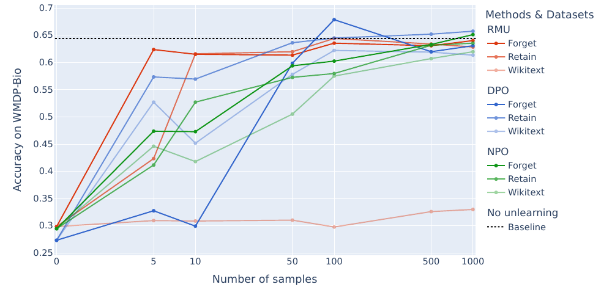
Fine-tuning on just 10 unrelated examples recovered most of what RMU "removed".
Evaluation Standards
Forgetting needs an agreed scorecard.
- Forget quality and retained utility together
- Resistance to relearning, not one snapshot
- Shared benchmarks: TOFU, WMDP, MUSE
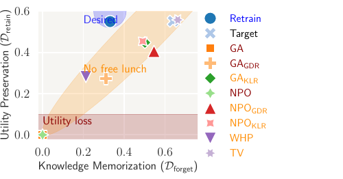
Without standards, every method claims success. Plot both axes at once.
Unlearning Meets Privacy
Two answers to the same deletion request.
Differential privacy
Limit influence up front, so little to delete.
Unlearning
Remove influence after the fact, on request.
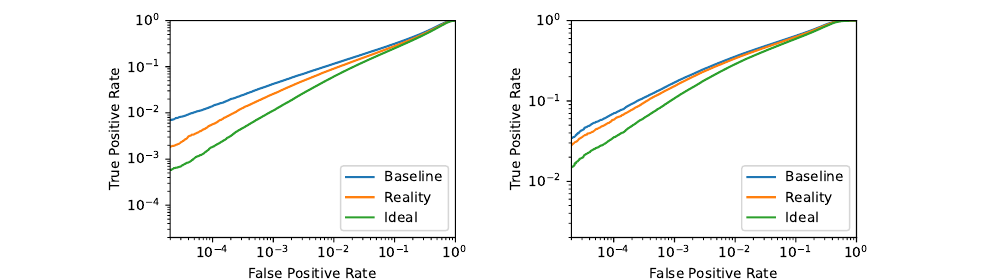
Prevention and cure for the same problem. Deletion has an onion effect: remove the most exposed records and the next layer becomes exposed.
Open Problems
- Cheap, exact unlearning for large models
- A certificate that deletion truly worked
- Forgetting that resists relearning
- Forget without harming the retain set
The frontier is wide open.
Where to Go Deeper
The rigorous treatment behind these ideas.
The formal version
Influence-function derivations, the SISA cost analysis, and the $(\varepsilon, \delta)$ unlearning guarantee in full.
Key Takeaways
- Deleting a row leaves traces in the weights
- Gold standard: retrain without the point
- SISA: exact and cheap, but reshapes training
- LLM unlearning often suppresses, not removes
Always ask: refused, suppressed, or truly removed?
Deletion that the model actually honors.